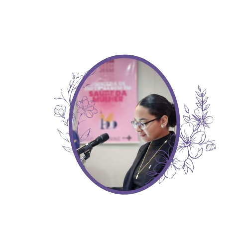

Seja Bem-Vindo!
Quem sou eu?
Uma enfermeira apaixonada por cuidar de pessoas cria um blog para compartilhar dicas de saúde, bem-estar e autocuidado. Com experiência em diversas áreas, ela aborda temas como prevenção de doenças, primeiros socorros e cuidados diários, de forma acessível e confiável. O blog também traz histórias de prosperidade, entrevistas com profissionais e orientações para quem deseja entrar ou crescer na enfermagem. É um espaço acolhedor e informativo, ideal para quem busca conhecimento sobre saúde com um toque humanizado.
Quais são minhas especializações?
- Mestre em Saúde da Mulher(UERJ)
- Pós em Traumatologia Infantil (PUC-RJ)
- Doutorado em Audiometria (UERJ)
Meus principais feitos
- Pesquisa em Saude da Mulher
- Monitoria em Audiometria
- Prêmio IBest 2024